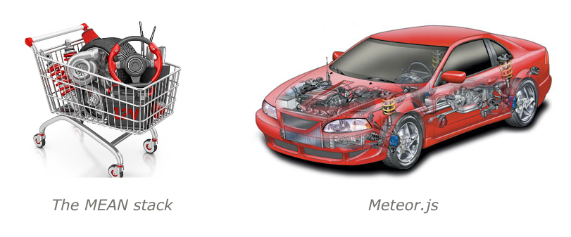
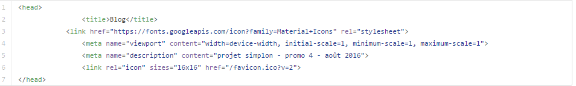
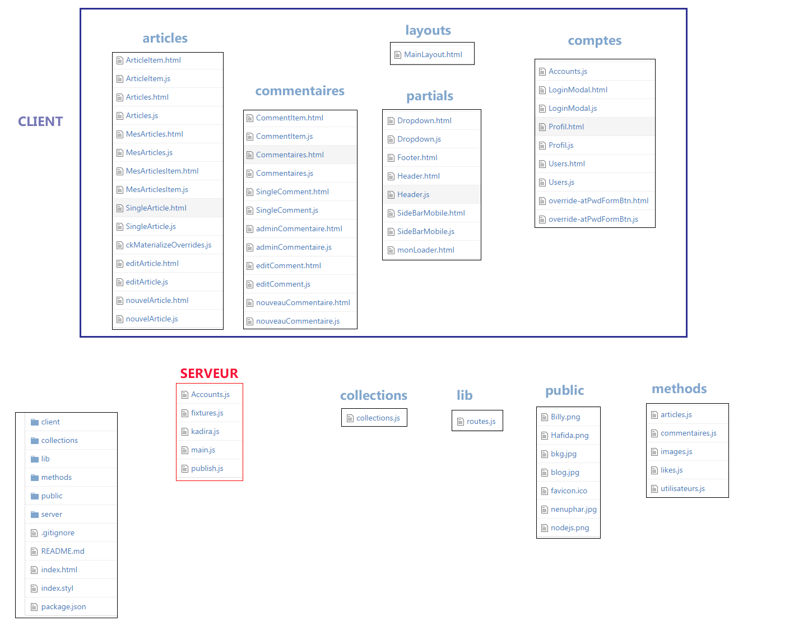
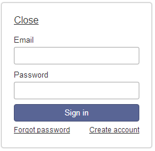
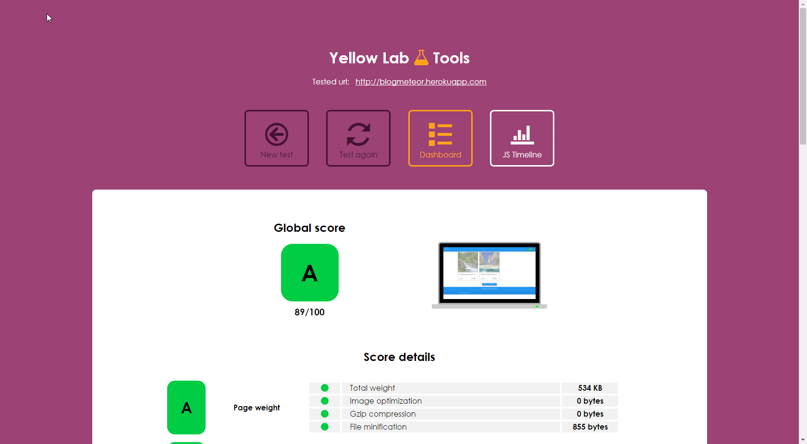

Présentation du projet

Fonctionnalités basiques & avancées/bonus
Gestion des articles

Utilisateur connecté

Commentaires et Likes

Profil

Commentaires

J'aime reçus / postés

Bonus
gestion de n admins/visiteurs

éditeur wysiwyg

likes annulables & pas d'autocongratulation :)

Organisation
Tutos ...

Meteor c'est quoi ?
index.html
Arborescence
Appli visuellement + réactive

publications & souscriptions

Utilisateurs
{{> atForm}}

Personnaliser le formulaire
- ajouter et gérer le champ avatar
- gérer des roles (utilisateur , admin)
Gestion de l'avatar
Démonstration
Choix techniques
- Blaze
- Materialize
- images et avatars dans la base
note YellowLabTools
Merci de votre attention ;-)
Annexes ...
Inconvénients ...
- meteor deploy => meteor.com Payant :-(
Liens utiles
Un petit exemple de réactivité
var a = new ReactiveVar(0);
Tracker.autorun(function ()
{
console.log(" a = " + a )
} );
a.set(12);
a.set(3);